>> Mapping Academy - Tutorials <<
(c) 2003 www.darth-arth.de
Terrain Erstellung mit Gensurf
Tutorial by Zero (Dave H.)
Übersetzung auf Hochdeutsch
by Darth Arth 
Kapitel 1.1
Erstellen eines Terrain Rohlings mit dem Leveller
Benötigte Tools:
GtkRadiant : http://www.qeradiant.com/?data=files&files_id=41
Leveller: http://www.daylongraphics.com/products/leveller/download/lev20demo.zip
SC3K Map Editor: http://www.tenermerx.com/sc3maped/sc3maped12.exe
Schritt 1.
Erstellen eines Geländes mit Hilfe vom "Leveller" und "SC3K Map Editor"
Leveller:
Nach dem der Leveller installiert wurde, können wir diesen starten.
Rechts habt ihr nun eine Toolleiste, mit der ihr Veränderungen an dem Gelände vornehmen könnt.
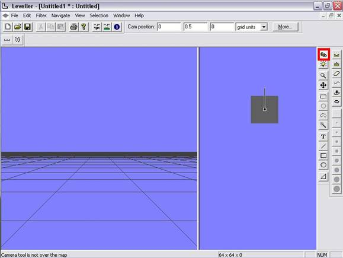
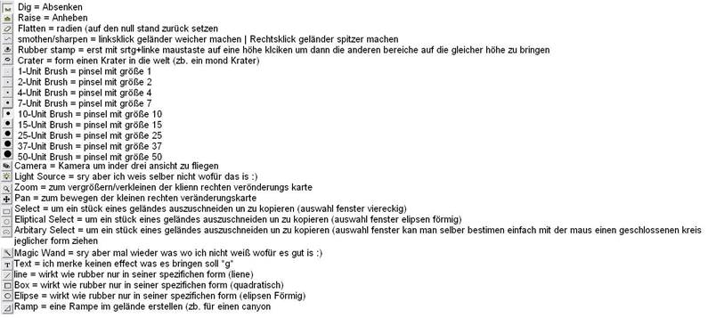
Klickt nun auf Zoom (kleine Lupe => vergrößern) und klickt solange auf das Feld mit dem kleinen grauen Kasten, bis der Kasten schon ins Fenster passt und ihr noch alle Seiten sehen könnt (Linksklick = vergrößern | Rechtsklick = verkleinern)
Als nächstes klickt ihr auf Raise (vergrößern) und klickt nun auf und wählt eine Pinsel Größe aus (die schwarzen punkte) so nun klickt ihr mit einem Linksklick auf das kleine graue Viereck
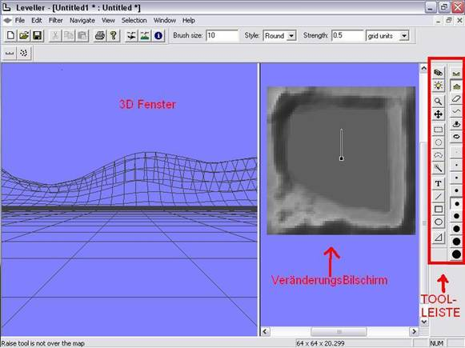
So auf diese Art und Weise, könnt ihr Veränderungen machen. Durch wählen verschiedener Pinselgrößen und Funktionen wie Krater, smoth/sharpen könnt ihr ein schönes Terrain erstellen.
Im linken größeren Fenster, könnt ihr euer Werk nun bewundern. Dort seht ihr genau, was ihr gemacht habt.
Um sich im 3D Sichtfenster umsehen zu können, braucht ihr folgende tasten:
A = Vorwärts
Z = Zurück
+ = Hoch
enter = Runter
1 = nach rechts
3 = nach links
4 = nach links drehen
6 = nach rechts drehen
7 = bild nach links kippen
9 = bild nach rechts kippen
8 = nach unten sehen
9 = nach oben sehen
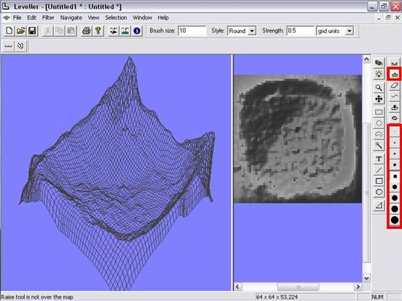
So, nun haben wir eine Terrain-Vorlage erstellt. Diese können wir aber noch nicht mit Gensurf benutzen.
Damit das geht, müssen wir folgendes machen: wir klicken auf File / Export / 8-Bit Bitmap… ,
bei der Dialogbox, die nun kommt, verändern wir nichts und klicken einfach auf OK und speichern unser Werk in einem beliebigen Ordner.
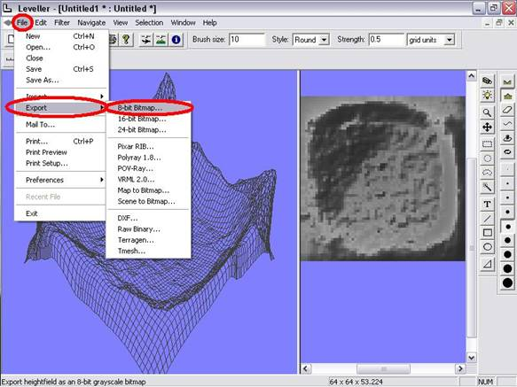
Wenn euch nicht mehr interessiert, wie man noch auf eine andere Art ein Terrain erstellt, könnt ihr gleich zu Kapitel 2 springen.
In diesem geht es darum, das nun gespeicherte Terrain in einen Berg umzuwandeln.
Kapitel 1.2
Erstellen eines Terrain Rohlings mit dem Sc3K Map Editor
Sc3K Map Editor:
Installiert den SC3K Map Editor und Startet ihn.
Oben, findet ihr nun eine Symbolleiste mit verschiedenen Funktionen zum verändern vom Gelände.
Klickt nun auf "zoom in" / "zoom out" solange, bis das linke blaue Bild ins Fenster passt und ihr das blaue Viereck gut sehen könnt und nichts verdeckt ist.
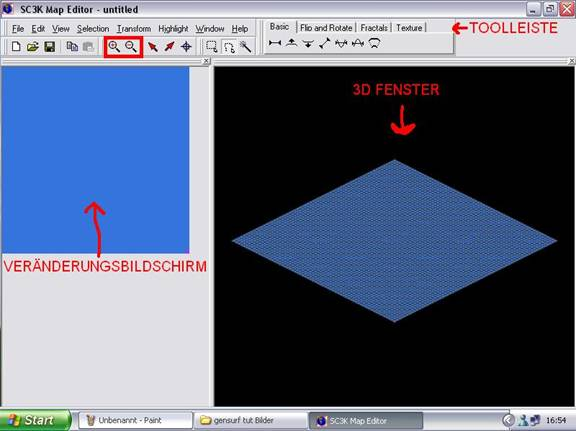
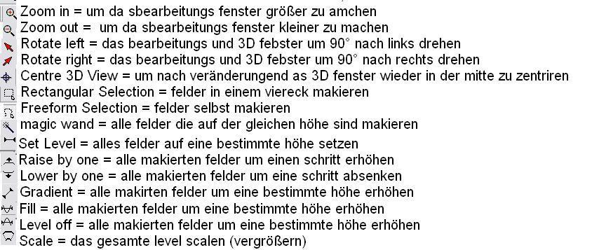
Als nächstes klicken wir auf "free form selection" und ziehen mit gedrückter Maustaste eine Bergkette (oder ähnliches)
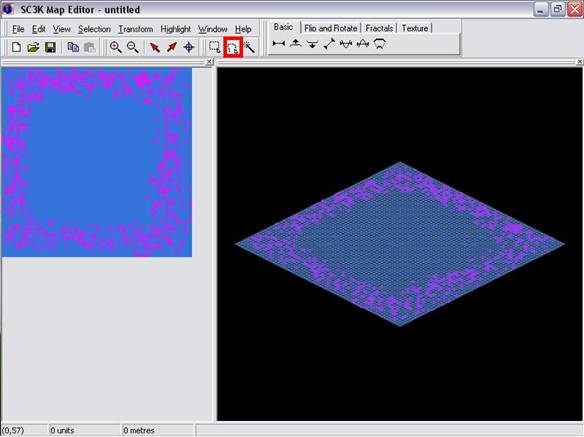
So, nun sind dort solche rosa markierten Felder. Jetzt klicken wir auf "Raise by one" und sehen, wie sich die rosa markierten Felder verändern. Im rechten Fenster erkennt man, wie sie sich erheben.
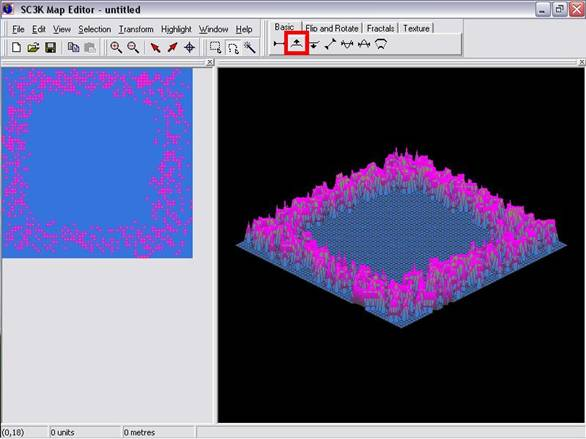
Da diese Art und Weise in den meisten Fällen eher umständlich und unkomfortabel ist, klicken wir nun auf "selection/select all", nun ist alles rosa.
Danach klicken wir auf "fractals".
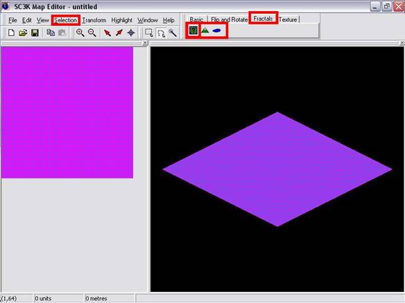
Nun wählen wir eine von drei vorgegebenen Einstellungen: lake (See), mountain (Berg) oder Terrain (zufälliges Gelände, Mischung aus Bergen und Seen).
Wir nehmen zum Testen z.B. Terrain. Im nun offenen Menü, stellen wir verschiedene Optionen ein, wie z.B. "Roughness".
Je weiter rechts der Balken, umso mehr wird das Terrain abwechslungsreich gestaltet (durcheinander).
Maximum und Minimum Hight (minimale und maximale Höhe des Geländes).
Wir wählen z.B. folgende Einstellungen: Roughness = Balken in der Mitte, Minimum hight: -70, Maximum hight: 300.
Nun, haben wir ein schönes Terrain, dieses kann man noch mit der oben beschriebenen Methode bearbeiten, bis es so ist, wie man es haben möchte.
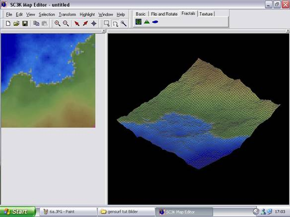
Nun speichern wir das ganze noch ab. Dazu klicken wir auf File / "save as" und speichern die Datei.
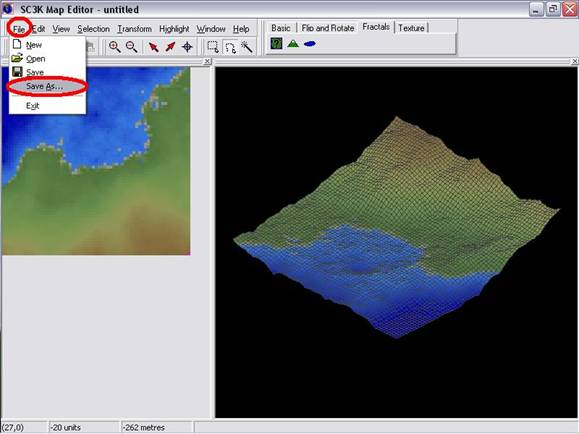
Kapitel 2.1
Einbinden des Terrain-Rohlings in eine Map
Als erstes starten wir den GtkRadiant und ziehen dort in der Draufsicht einen Brush, der so groß ist, wie das spätere Terrain sein soll (wie hoch der Brush ist spielt keine Rolle). Nun klicken wir oben in der leiste auf Plugins > Gensurf > Ground Surface…
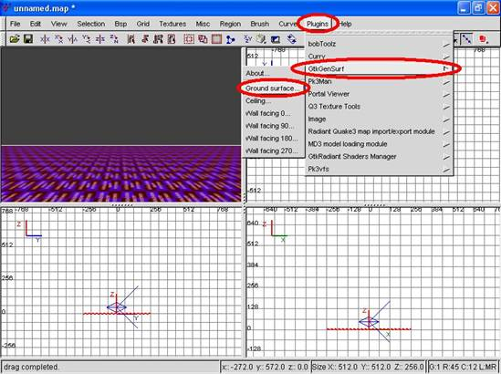
in dem nun offenen Menü müssen wir einige Sachen verändern. Klickt zuerst auf "from Bitmap". Dann, ist es wichtig, dass wir die "Roughness"- Einstellung auf "null" stellen, da wir sonst nicht das Ergebnis bekommen, welches wir benötigen. Wenn ihr das alles verändert habt, klicken wir auf "Extents"
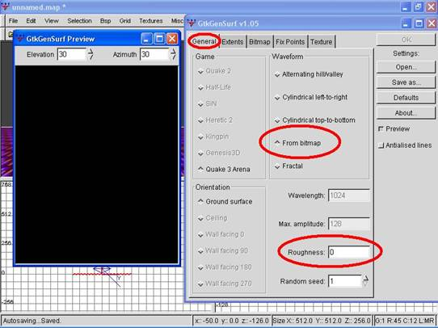
Jetzt, im "Extents" Menü, stellen wir die Division bei X und Y beide auf "50".
Wenn ihr das Terrain aus Curves haben wollt, müsst ihr nun den Button bei "use bezier Patches" aktivieren, wenn ihr eins aus Bruches haben wollt, lasst ihr den Knopf draußen. Nun gehen wir ins Bitmap Menü.
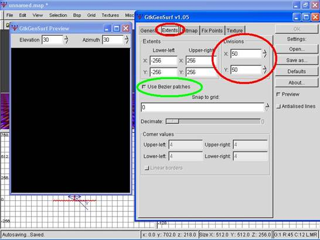
Im Bitamp Menü müssen wir jetzt unser Terrain raussuchen. Dafür klickt ihr auf "browse" und wählt eines der zuvor erstellten Terrains.
Da dieser nun einen ziemlich schlechten Maßstab hat, müssen wir die Einstellung "Map Color 255 to" hochschrauben. Im Normalfall reicht ein Wert von 2000.
Bei großen Gebirgen, könnt ihr es aber auch ruhig auf bis 9000 stellen, je nachdem, wie ihr es grad braucht.
Danach klickt ihr auf OK und seid fertig.
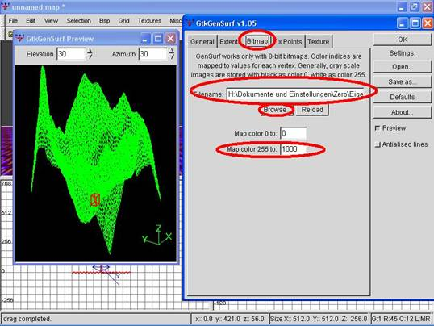
hier, als Beispiel, ein aus Curves erstelltes Terrain (links) und daneben (rechts) ein aus Bruhes.
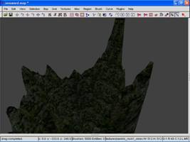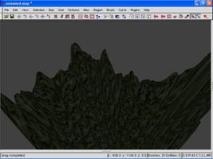
Kapitel 2.2
Bearbeiten des gebauten Terrains
Ein Brush Terrain ist leicht zu Bearbeiten. Will man z.B. einen Block reinsetzen, muss man den Block nur bauen, reinsetzen und das ganze mit "csg_substract" ausschneiden (diese Methode wird aber nicht empfohlen). Da es für so was schon genüg andere Tutorials gibt, werde ich nicht näher drauf eingehen, sondern mich mit dem größeren Problem, nämlich dem bearbeiten eines Curve-Terrains beschäftigen.
Um ein Curve-Terrain zu bearbeiten, müssen wir uns zuerst mal eine Stelle im Terrain suchen, an der wir etwas anbauen wollen.
Dann markieren wir das Curve-Entity an dieser Stelle ist und löschen es.
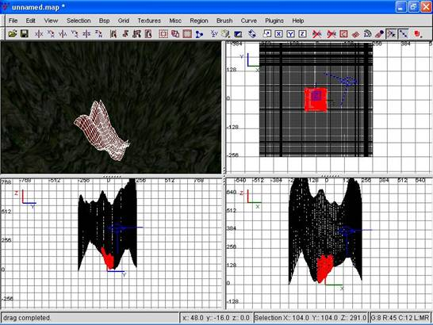
So..., nun ziehen wir in der Größe, des nun entstanden Loches einen Brush, den wir dann später beliebig verändern können.
Jetzt sind wir eigentlich schon fertig. Diesen Brush können wir nun ohne weiteres als Hausfundament nutzen, Landeplattform usw...
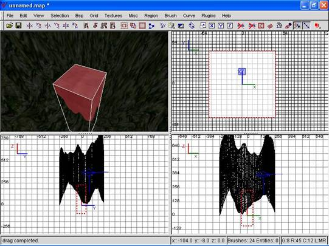
Tutorial by Zero (Dave H.)